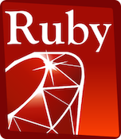
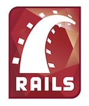
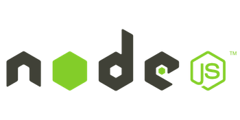
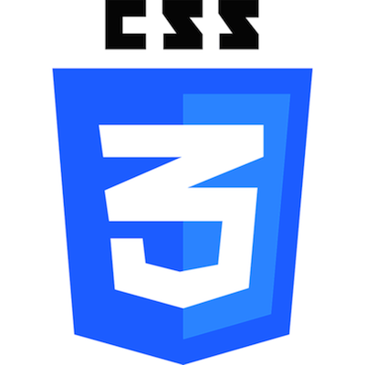
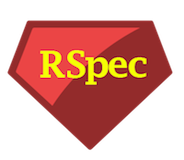

WHO I AM
A marketing writer turned junior full-stack developer, I love finding effective and creative solutions to complicated problems and developing user-friendly programs that help people accomplish things easier. I'm looking for a tech company where I'll have the opportunity to keep learning new technologies and languages.
- Languages
- Libraries
- Frameworks
- Databases
- ORMs
- Front End
- Additional
- Soft Skills
Ruby
JavaScript
jQuery
jQueryUI
 Data-Driven Documents
Data-Driven Documents
Ruby on Rails
Node.js
 Express
Express
 Sinatra
Sinatra
PostgreSQL
 SQLite
SQLite
MongoDB
ActiveRecord
mongoose
HTML
CSS
Git
RSpec
AJAX
Amazon S3
SCRUM
Agile Development
Pairing
Agile Development
Pairing
Recent Projects
Site Edit Productivity Tools, Nov 2013 - Mar 2014 - Groupon
Javascript, jQuery
Application independently conceived and developed to standardize interdepartmental communication. Went into production January 2014 and is currently still in use on a team of approximately 25 people
Javascript, jQuery
Application independently conceived and developed to standardize interdepartmental communication. Went into production January 2014 and is currently still in use on a team of approximately 25 people
Pet Node, May 2014 (http://bit.ly/1mPlXeM) - Dev Bootcamp
Node.js, Express.js, MongoDB, JavaScript, jQuery, jQuery UI, D3, Amazon S3, Nodejitsu
App for easily managing pet information and making visual comparisons of food nutritional content
Node.js, Express.js, MongoDB, JavaScript, jQuery, jQuery UI, D3, Amazon S3, Nodejitsu
App for easily managing pet information and making visual comparisons of food nutritional content
Ruby Chess, May 2014 (http://bit.ly/1m8AAZ5) - Dev Bootcamp
Ruby, Ruby on Rails, RSpec, JavaScript, jQuery, jQueryUI, PostgreSQL
Fully functional chess game, primarily built for the mental challenges it posed
Ruby, Ruby on Rails, RSpec, JavaScript, jQuery, jQueryUI, PostgreSQL
Fully functional chess game, primarily built for the mental challenges it posed
Relevant Professional Experience
Site Editor, Groupon, Nov 2010 - Mar 2014 (Technical and Writing) - JavaScript, jQuery
Worked autonomously as part of Groupon's editorial services team on live and soon-to-air deals while maintaining up to date technical knowledge of the Groupon website. Immediately corrected issues as they arose or reported them to our engineering team while maintaining open lines of communication with customer service managers, risk management, and sales. Developed set of productivity tools in JavaScript and jQuery.
Worked autonomously as part of Groupon's editorial services team on live and soon-to-air deals while maintaining up to date technical knowledge of the Groupon website. Immediately corrected issues as they arose or reported them to our engineering team while maintaining open lines of communication with customer service managers, risk management, and sales. Developed set of productivity tools in JavaScript and jQuery.
Freelance Writer and Webmaster, Southeast Carbon - Aug 2010 - Sep 2010 - New Smyrna Beach, Florida - HTML, CSS, SQL
Wrote and designed presentations and brochures for the company's presence at upcoming events. This included managing and updating website content, updating a database with current information on corporate partners, and fact checking research claims by finding corresponding studies.
Wrote and designed presentations and brochures for the company's presence at upcoming events. This included managing and updating website content, updating a database with current information on corporate partners, and fact checking research claims by finding corresponding studies.
Loyola Chicago Biodiesel Lab, Communications/Outreach Intern and Webmaster, Jan 2008 - May 2008 - Serena CMS (Oracle)
Collaborated with chemists to publish research data on lab's website and managed website content.
Collaborated with chemists to publish research data on lab's website and managed website content.
Education
- Dev Bootcamp, 2014
- Loyola University Chicago - GPA 3.72, Magna Cum Laude, President's list
BA in English & BA in Communication, 2009 - Broward College - GPA 3.90, Summa Cum Laude, President's list
AA in Journalism, 2007